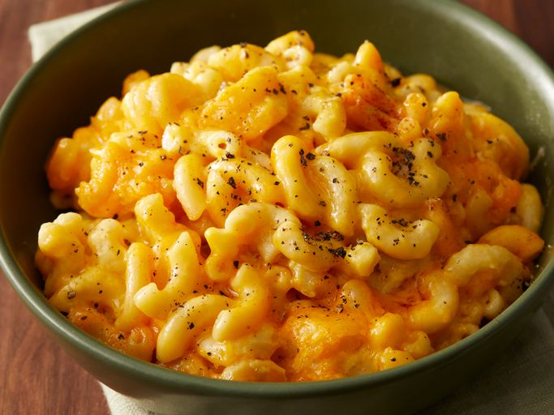

Slow Cooker Mac and Cheese

Description :
This crackpot mac and cheese is creamy, comforting, and takes just moments to assemble in a slow cooker. Great for large family gatherings and to take to potluck dinners. It's always a big hit!
Ingredients :
- Macaroni: This classic mac and cheese recipe starts with a package of elbow macaroni.
- Butter: A stick of butter lends richness and flavor.
- Seasonings: Simply season the macaroni and cheese with salt and pepper.
- Cheese: You’ll need shredded Cheddar cheese for this basic recipe.
- Milk products: The creamy cheese sauce calls for whole milk and evaporated milk.
- Eggs: Up the richness with two beaten eggs.
- Canned soup: A can of condensed Cheddar cheese soup is the budget-friendly secret ingredient.
- Paprika: Ground paprika is optional, but recommended for fans of flavor!
Steps :
- Make the meat sauce.
- Cook the noodles.
- Make the ricotta mixture.
- Layer the lasagna according to the recipe instructions.
- Cover with foil and bake.
- Let the lasagna rest before serving.